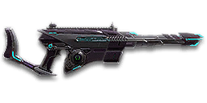

← Back to the Artemis VX26 comparison
Sage Guide · Scout Rifle · Infiltrator · Vanu Sovereignty
— the Vanu automatic scout, no drop, bursts of five
The Vanu Sovereignty's full-auto scout rifle — 143 damage at 652 RPM, the same damage per second as the NS-11A, in Infiltrator hands. Twenty-four rounds, a gentle straight-up recoil, bursts of five, and bullets that never drop.

Not a starter — buy it. It costs 650 certs or 499 DBC. Your Infiltrator starts with the XM98 bolt-action sniper — this rifle is a deliberate purchase on top of it, bought from the loadout screen.
Picture the scene, because you've probably lived it: you're sprinting across a courtyard, an enemy appears, and you do everything at once — hold the trigger down while you're still running, then press aim-down-sights (ADS) a split-second later, finger still down. The sight picture snaps in, it looks precise… and your bullets spray everywhere except the man in your crosshair. He kills you. It feels like the game cheated. It didn't — here's what actually happened.
You started firing from a sprint, from the hip. Sprinting is the least accurate state in the game: your cone of fire starts at 7.0° — fully bloomed, the widest it can ever be. Every shot you fire from the hip widens it further still (+0.1° per shot).
Then you pressed ADS mid-hold — and nothing reset. Aiming down sights does not shrink a cone of fire that is already bloomed. The scope only gives you a precise picture; the bullets keep flying out of the wide cone you built while running and hipfiring. That's the whole mystery: accurate-looking aim, wildly inaccurate gun.
Two timers stack the deck further: your gun needs about 0.3 s to settle after a sprint, and raising the sight itself takes ~0.15 s. Trigger held through all of it means your first half-second of fire is pure confetti.
1 · Feet. Let go of sprint (and the trigger, if you're already holding it). Stop, or drop into a strafe — anything but a full sprint.
2 · Sight. Press ADS and let the sight come up. This takes a heartbeat — that's fine, you picked this angle before you fired.
3 · Trigger. Now fire — in bursts of 5, starting from the aimed cone of 0.10°. First shots land where the dot points, and you control the bloom from zero instead of inheriting a maxed-out cone.
Stop → aim → fire. If you take one habit from this entire page, take this one. You'll practise exactly this rhythm in the simulator in section 04.
Four beats, left to right — the same mistake the cards above describe, drawn out.
1 · SprintingYour cone starts maxed at 7.0° — the widest it can ever be.
2 · Trigger heldFiring from the hip while running — every shot adds bloom.
3 · ADS, mid-holdThe sight looks precise — but aiming down sights does not reset bloom.
4 · The sprayBullets fly out of the wide cone you built. The enemy walks away.
Same fight, done right. Each beat has a job, and the order is the whole lesson.
1 · StopLet go of sprint (and the trigger). About 0.3 s for the gun to settle.
2 · AimPress ADS and let the sight come up (~0.15 s).
3 · FireNow fire — from the aimed cone. First shots land where the dot points.
The exception — under ~8 m, skip the whole danceHipfire works, no ADS needed, and stopping is optional. Keep moving, strafe, and let the hipfire ring do the work.
Every enemy infantry has 1,000 health (500 shield + 500 health). Your bullet does 143 damage up close, fading to 125 at long range. Headshots count double, leg shots count less (×0.9). There are only two damage tiers to memorise — no middle step:
| Range | Damage | Head | Chest | Legs | Chest vs shielded Heavy |
|---|---|---|---|---|---|
| Close · 0–10 m | 143 | 4 | 7 | 8 | 11 |
| Far · 10–60 m+ | 143→125 | 4 | 8 | 9 | 12 |
Perfect-accuracy times to kill: 4 headshots ≈ 0.28 s at any range, 7 chest shots ≈ 0.55 s up close and 8 chest shots ≈ 0.64 s past 10 m. In real fights you'll land maybe half your rounds — still, this is why the head matters so much on this gun: 4 head hits end it at any distance.
Full power to 10 m, then a steady slide to minimum at 60 m. The gold line shows Soft Point Ammunition, which stretches full power to 15 m.
One gun, four fighting styles. The right technique changes with distance — use the range finder below to see what your bullets do at any range, then learn the four bands underneath it.
How to fight hereAim down sights at the upper chest and neck. Fire in bursts of 5 — your recoil climbs into the head for free damage.
Aim: centre of the chest, from the hip. Keep moving.
Scoping in costs you time and slows you down — at arm's length that gets you killed. Your standing hipfire cone is 2.5° — a 0.35 m ring at 8 m, well inside the chest. Strafe side to side (A/D) while firing so you're hard to track, and let your Cloak carry you to the next angle after the trade.
Aim: neck / upper chest. Bursts of 5 rounds.
This is where the gun earns its keep: full 143 damage, mild recoil, and 4 head hits end the fight in about a quarter of a second. Start your crosshair at the neck — the natural upward climb walks your shots into the head, and the same damage per second as the NS-11A does the rest.
Aim: chest. Bursts of 5 rounds, pause between them.
Damage is sliding toward 125 and your cone of fire blooms if you hold the trigger. Fire a burst, release for a split second to let accuracy reset, fire again. The recoil is straight up (0° angle), so pull your mouse gently down. Crouch or stand still when you can — both tighten your shots.
Aim: chest. Taps of 3–5 rounds at exposed targets only.
At 125 damage you need 8 chest hits — a long, loud advertisement of your position. Take these shots at stationary or fleeing targets, medics reviving, and engineers on turrets. Otherwise, your better play is to close the distance behind cover. Knowing when not to shoot is a skill too.
Your accuracy is decided by two things before skill even enters it: what your body is doing (your stance sets the starting cone of fire) and what your finger is doing (holding the trigger grows that cone with every shot). This rifle is full-auto only — there is no second fire mode to switch to — so “firing modes” are something you do with your finger, not a setting on the gun: hold, release, hold.
| Stance | Starting cone | What it means for you |
|---|---|---|
| Sprinting | 7.0° | Maxed out — the widest the cone can be. This is the section 01 disaster: never start firing from a sprint. |
| Hipfire, moving | 3° | Walking or strafing from the hip. Fine inside ~8 m, leaks rounds past the target beyond it. |
| Hipfire, standing | 2.5° | Your point-blank default — the 0.35 m ring at 8 m in section 05 is this stance drawn out. |
| Hipfire, crouched | 2° | The tightest hipfire you have (2.5° if you crouch-walk). Crouch when holding a doorway from the hip. |
| Aimed (ADS), feet planted | 0.1° | Standing or crouched makes no difference here — twenty-five times tighter than hipfire. This is why section 01's order matters. |
| Aimed (ADS), strafing | 0.3° | The moving floor — this is the cone you start strafing from, and it is the number to remember. A wider start than planted, and you move at half speed while aiming. Strafe during your bursts — a moving target that is also shooting back accurately is this gun's whole trick. |
| Mode | How your finger does it | Use it at |
|---|---|---|
| The mag dump | Hold the trigger and don't let go | Point blank only, or suppressing a doorway. Bloom maxes out fast — past ~8 rounds you're spraying, not aiming. |
| Bursts — the default | Hold for 5 rounds, release ~0.15 s, hold again. 6–8 rounds is fine while you're learning | Almost everything, 8–50 m. Each release resets the cone, so every burst starts at 0.10°. |
| Tap-fire | Short taps of 3–5, or single clicks, with a real pause between | 50 m and out, at exposed or stationary targets. Slow, but every round goes where the dot is. |
One more number worth knowing: your ADAD window is 4 aimed shots (5 from the hip). Those first shots of a burst are the ones you can fire while snapping left-right between directions — but the cone still grows 0.05° with every one of them, so they are a movement window, not free accuracy. There are no shots with no cone growth on this gun.
A target 30 m away, aiming down sights. Press and hold FIRE (mouse, touch, or hold Space with the button focused) and watch the holes walk wider the longer you hold — that's firing from an ever-growing cone. Release, let the cone reset, fire again. Aim for bursts of 5; 6–8 is tolerable while you're new. This practice window is shared by the whole Sage series: it's driven by a weapon profile plugged into the window — here the Artemis VX26's (652 RPM, 0.10° starting cone, 0.05° bloom per shot, target at 30 m) — and the spread is drawn at true scale from those numbers.
Cone of fire — fills as you hold, empties when you release.
Your bursts will be graded here — green at 5 rounds, tolerable up to 8.
Some things are easier to show than to say. Here's what your bullets actually do: how wide hipfire spreads at 8 metres, what a good burst rhythm looks like, and what the 2x sight really changes. The hands-on version — holding the trigger yourself — is the practice window in section 04.
A full-size target 8 m away — an arm's-length room fight. The rings show where hipfire rounds land around your aim point (the chest). Sizes are drawn to scale from the gun's real cone-of-fire numbers.
Read it this way: standing still, the 0.35 m ring sits well inside the chest — most rounds hit a target this size, which is why hipfire works point-blank. But move and it grows to 0.42 m — so the edge rounds start leaking past him, and the rings only grow with distance while the man doesn't. Past ~10 m that's rounds missing entirely: the exact moment to switch to aiming down sights, where the spread shrinks to a dot. (Ring sizes use the real geometry: spread diameter = 2 × distance × tan(cone ÷ 2).)
Every shot widens your cone of fire (“bloom”). Releasing the trigger for a heartbeat resets it. Same 18 rounds, two very different outcomes:
The target pattern is bursts of about 5 rounds — that's the ideal. Bursts of 6–8 are fine while you're new (call it newbie tolerance). Past that, the bloom (0.05° per shot aimed, 0.1° from the hip) keeps growing with every shot — the cone grows from shot 1, there are no free shots with no cone growth — so the extra bullets mostly decorate the wall behind your enemy instead of hitting him. Short bursts also leave you rounds for the second enemy — remember, the magazine is only 24.
No zoom. The target at 35 m is small but the view is wide open — you see the crate, the tower, and the next enemy coming. Fast to aim, nothing blocks your edges. Best inside ~40 m.
Same target, same 35 m — but he looks twice as tall, so placing shots on his chest and head gets much easier. The price: your view narrows to the round window, the crate and tower are gone, and close targets feel fast and huge. Best at 25–50 m.
That's the whole 30-cert decision from section 06 in one picture: 1x for awareness, 2x for precision. Most veterans carry both and swap per base — indoors 1x, open ground 2x.
Buying attachments is buying a loadout, not a shopping list. Here's every slot for this gun and whether it's actually worth the certs.
Two things to know before you spend a single cert. First, this gun comes bare — iron sights, no rail attachment, no barrel attachment. Second, one thing doesn't exist for this gun at all: no Heavy Magazine. Don't go looking for it — the rail slot's Extended Magazine is the way you buy more rounds. The good news: the rail slot is the richest of any scout rifle — Forward Grip, Angled Grip, Comfort Grip, Laser Sight, Darklight, and an Extended Magazine.The standard cost is 30 certs for optics, 100 certs for rail, barrel and ammo parts — the ones here follow that pattern unless a different price is shown.
Legend: Good most fights · Situational sometimes, not always · Skip avoid it — usually worse than stock.
The plain iron sights the gun ships with. Usable, but the posts are chunky and they crowd the target at range.
Good: your first fights while you save 30 certs — it costs nothing and works.
Bad: anything past 30 m, where the posts hide the chest you're aiming at.
A clean illuminated red-dot sight with no zoom. Your default once you can afford it, and honestly your best all-round option.
Good: everywhere indoors and out to ~40 m — which is most PlanetSide fights.
Bad: picking out targets past 50 m; that's what the 2x is for.
Doubles your view magnification. Costs almost nothing — the price of one kill or two.
Good: open-field bases, tower fights, and your 25–50 m burst game. Swap between 1x and 2x per fight.
Bad: tight indoor rooms — the zoom makes close targets feel fast and huge.
Night-vision sight: enemies glow white against a dark view, and it sees through smoke.
Good: night fights, smoky doorways, spotting infiltrators by their outline.
Bad: daytime and long range — its view is short-ranged and washes out in bright light.
V3 Holo / VMS (3.4x) and CSZ / OG-4 (4x) and TriGon-6 (6x) — sniper-style magnification on a full-auto scout rifle.
Good: almost nothing a beginner does — recoil magnifies too, and tunnels your vision. The 3.4x earns its keep later, holding a long lane once your taps are automatic.
Bad: any fight inside 30 m, which is where you'll spend your first hundred hours.
The recoil is already mild — vertical 0.3, straight up. Plenty of veterans run this slot empty forever.
Good: your first weeks. Spend certs on your Cloak and suit slots first.
Bad: nothing — there's no downside to an empty slot.
Cuts vertical recoil by 30%. Costs you: hipfire spread grows 15%, and enemies see you on the minimap from 35 m farther away when you fire.
Good: if you mostly aim down sights at mid-range and the upward climb bothers you.
Bad: hipfire builds and sneaky play — you get louder on the map and sloppier from the hip.
Hides your muzzle flash so your own view stays clear at night — but you appear on enemy minimaps from 15 m farther away.
Good: night fights where your own flash blinds you. A comfort pick, nothing more.
Bad: as an early purchase — it changes no fight outcome. Buy it last, if ever.
You vanish from the minimap when firing and your shots are quiet. In exchange, damage starts dropping off 20 m sooner and bullets fly 15% slower (530 → 451 m/s) — harder to lead moving targets.
Good: flanking behind enemy lines, rooftop and tree work, solo play behind the front.
Bad: front-line fighting where everyone already knows where you are — you pay the damage cost for stealth you don't need.
Cuts side-to-side recoil by 25%, keeping your bursts on a single target. Tiny cost: weapon swap is 0.15 s slower.
Good: the default for aimed, mid-range play — and on this gun the sideways walk is already small (±0.225°), so the grip makes it nearly flat.
Bad: nothing meaningful. It only stops helping if you never aim down sights.
The first shot of each burst kicks 60% less — but side-to-side recoil rises 10% on everything after it.
Good: this gun, specifically — its first shot kicks 1.5× as hard as the rest, so taming that first jump makes every burst start flatter.
Bad: long mag dumps, where the +10% sideways recoil on shots two and onwards starts to cost you. Pick this or the Forward Grip — you can't have both.
Swaps to the gun 30% faster and cuts side-to-side recoil by 20% — but vertical recoil rises 20%.
Good: holding a lane, where the faster swap between rifle and sidearm matters more than the extra vertical kick.
Bad: as a recoil fix: the sideways walk is already small (±0.20°), and the +20% vertical kick is real.
Hipfire accuracy improves by a third (33% tighter cone). Replaces the Forward Grip — you can't have both.
Good: indoor point-holds and stairwell fights where you hipfire inside 8 m.
Bad: open bases — you give up aimed recoil control for a bonus you rarely use.
A torch whose beam reveals cloaked infiltrators. Toggle it with the attachment key (X by default).
Good: hunting a stalker infiltrator camping your capture point — sweep corners with it.
Bad: as your everyday rail — it gives zero accuracy help, and the beam advertises your position.
Six more rounds in every magazine (24 → 30), and the weapon takes 15% longer to equip.
Good: nearly always — 30 rounds is a full extra burst per magazine, and bursts are your whole discipline.
Bad: nothing meaningful — the slower equip is barely felt.
Full 143 damage now reaches to 15 m instead of 10 m (the gold line on the chart above). Cost: bullets fly 10% slower (530 → 477 m/s).
Good: nearly always — most duels happen at 10–20 m, exactly where this extends your 7-shot kill.
Bad: long-range duels against runners, where the slower bullet needs more lead. A small price.
Bullets fly 10% faster (530 → 583 m/s) and minimum damage now holds out to 80 m instead of 60 m — but full damage ends 2 m sooner (10 m → 8 m).
Good: open-field fights at 40 m and out, where the faster bullet means less lead on moving targets.
Bad: close work — you shave 2 m off your best damage band for speed you don't need indoors.
Spend order rule: VHO Reflex 2x (30) → Forward Grip (100) → Soft Point Ammo (100) → then stop. 230 certs of attachments on top of the 650-cert gun. Put the next several hundred certs into your Cloak and suit slots — they win more fights than any barrel.
Same rifle, four jobs. The optic is the real choice in every build — it decides what ranges the rifle is for. Pick the job that matches what you're doing this session, and swap between them.
Costs below are attachments only — the gun itself is 650 certs / 499 DBC on top of all of them, so even the “0 certs” build assumes you've already bought it.
0 certs attachments · Just bought the gun
What the 650 certs actually buy you. Genuinely usable — learn the gun on this before spending anything more.
230 certs attachments · Recommended
The best value in this whole guide. Covers every fight from a doorway to a tower courtyard.
230 certs attachments · Indoor brawler
Built to hipfire down stairwells and hold a capture point room. Swap back to the All-Rounder outdoors.
330 certs attachments · Flanker
No minimap blip, quiet shots, tight hipfire for the kills you take from behind. Weak in a fair fight — so don't take fair fights.
Six small habits, each worth one real fight. Steal all six and you can win with any scout rifle. Keep only one or two and you'll still notice them.
Your Cloak (F key) gets you to the fight — it doesn't get you through it. Firing breaks cloak, so decloak behind cover, already aimed at the doorway, and let the first burst land before the enemy knows you're there. If the fight goes bad, cloak and move: a scout rifle duels badly from the open, and your best defence is not being where the return fire lands.
Headshots deal double damage: 4 kill at any range versus 7–8 to the chest. Don't aim at the head directly — aim at the neck and let the gun's natural upward climb carry shots two and three into the skull. It's the single biggest damage upgrade you own, and it's free.
Every shot widens your cone of fire. Holding the trigger past ~8 rounds at range means later bullets fly around your target, not into it. Five rounds is the ideal burst; release the trigger for a heartbeat between bursts — your accuracy resets and your hits per magazine roughly double.
Reloading with even 1 bullet left takes 2.00 s; an empty gun takes 2.64 s. That extra 0.64 s is more than half a second standing defenceless. Count roughly: after two kills or ~15 rounds, duck behind cover and reload early. Treat the last 9 rounds as your emergency reserve, not your working magazine.
Walk with your crosshair at head height, pointed where an enemy's head will appear — a doorway edge, a corner, stairs. Most beginners lose fights in the half-second spent dragging the crosshair onto target. And remember: you move at half speed while aiming, so keep your bursts short and your strafes between them — plant your feet for the burst, move for the pause.
Your damage, accuracy and cloak all shine at close-mid range. Sprint between cover, use buildings and rocks as stepping stones, and arrive at your range before opening fire. The player who chooses the range usually wins the duel — make it you. And stay near friendlies: an Infiltrator alone in the open is a free kill, but one behind a squad line, bursting heads between cloaks, is the reason the line holds.
Know them before someone else shows you. Every weapon here has the same five kinds of problem — a counter weapon, a counter range, a moment that leaves you naked, and a habit that gives you away. Learn the shapes.
The rail slot's Extended Magazine takes you to 30, but there is no Heavy Magazine on this gun at all — it simply doesn't exist.
Play around it: Burst discipline (habit 3) and early reloads (habit 4). Your 2.00 s reload is fast — reloading often is the design, not a failure.
Past 60 m you're at 125 damage: 8 chest shots, 12 against a shielded Heavy, with bloom fighting you the whole way. Snipers and battle rifles own that ground.
Play around it: Tap-fire at exposed targets only, and spend the rest of the time closing distance. You're an Infiltrator — the squad line is your address, and it's rarely 60 m from the enemy.
Your aimed strafe is 0.5× — and every automatic rifle you meet strafes at the same half speed while shooting, so you have no movement edge in the duel.
Play around it: Strafe between bursts, not during them. The burst is the shot; the pause is the move.
Vertical recoil is only 0.3 and the angle is straight up — the easiest recoil of any scout rifle here. But 0.05° of bloom per aimed shot adds up across a 24-round magazine, and the first shot already kicks 1.5× as hard as the rest.
Play around it: Bursts of 5 (habit 3) and the Angled Forward Grip (section 06), which tames that first-shot kick by 60%.
The NS-11A shares your damage per second (1,554) and out-handles you in most regards — but you can't carry one as an Infiltrator. This is the closest your class gets, and the cloak is what makes it work.
Play around it: Buy it for the role, not the raw stats: an automatic rifle in Infiltrator hands, with a cloak to choose every fight. And remember the swap time: 0.65 s to bring it out, so change weapons behind cover, never in the open.
Do one per alert
You don't get better by reading this page. You get better by doing five specific reps, this session, until they're boring. Pick one habit from section 08, do it for a whole alert, and you'll know whether it's working. Don't try all five at once — that doesn't work.
2 minutes · recoil
Aim at a wall 20 m away and empty a full magazine in bursts of 5 without touching the mouse. Watch the bullet pattern climb straight up — and watch the very first shot jump furthest, that ×1.5 first-shot kick. That's your gun's fingerprint. Repeat, this time pulling down, until the group stays fist-sized.
3 minutes · aim height
Walk the dummy range keeping your crosshair glued to neck height the whole time, snapping to each new target without dipping to the floor or sky. Slow and clean first; speed comes on its own.
4 minutes · burst control
At 30–40 m, kill dummies with bursts of 5, releasing the trigger fully between bursts. If a burst goes wide, shorten it. Goal: whole kills without a single wild round.
3 minutes · hipfire
Pick a dummy, stand 5 m away, and circle it with A/D while hipfiring it down without stopping. This is your point-blank survival skill — the one that fires while your shield and movement do the defending.
3 minutes · habit
Fire exactly 15 rounds, step behind a pillar, reload, repeat. Train your hands to reload early and only in cover until it's automatic — in real fights you'll do it without thinking, which is the point. Remember: the Extended Magazine takes you to 30, but the habit is the upgrade.
Pocket rule: Artemis VX26 · 650 certs — NOT a starter (the VS starter is the XM98) · fight at 10–40 m · aim neck, burst 5, release, repeat · no bullet drop, ever · reload early behind cover (2.0 s, never on empty) · buy the VHO Reflex 2x (30) + Forward Grip (100) + Soft Point (100) · hipfire under 8 m · past 50 m, tap or close in.